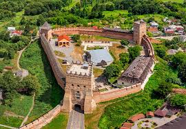

Lutsk is a wonderful town
Lutsk is one of the old oldest town in Ukraine. Its history is about 1000 years old. The first chronicle mention of Lutsk dates back to 1085, from which the people of Lutsk count the birthday of their city. The silent witness of all historical events of the city is the Lutsk Castle - an architectural monument of national importance.

Go to Wikipedia